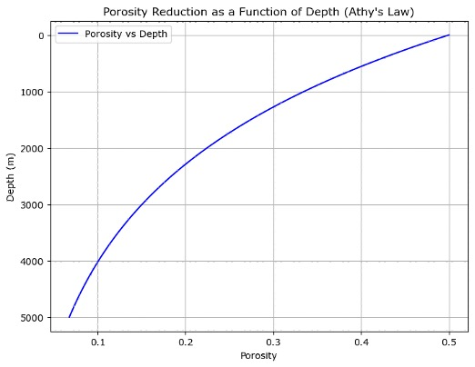

Compaction in sedimentary basins is a key process that influences rock properties, pore pressure, and subsurface fluid dynamics. It occurs as sediments are progressively buried under overlying layers, causing the grains to rearrange, reduce porosity, and increase bulk density. Understanding compaction trends is crucial for predicting the physical properties of subsurface rocks, which play a significant role in hydrocarbon exploration, reservoir management, and geotechnical studies.
In sedimentary basins, compaction is primarily driven by the weight of overburden layers. As sediments accumulate over geological timescales, the increasing pressure from overlying layers causes a reduction in pore space and an increase in bulk density. Compaction can be broken down into two major types:
Mechanical compaction occurs at relatively shallow depths and low temperatures. This process involves the physical rearrangement of grains, with water being expelled from the pore space as grains become more tightly packed. In this phase, porosity and density change rapidly with depth, and rock properties like seismic velocity begin to reflect the increased stress on the sediment grains.
Chemical compaction, or diagenesis, takes place at greater depths where temperature and pressure conditions are higher. This process involves the chemical alteration of mineral grains, often leading to cementation, dissolution, or recrystallization. As diagenesis progresses, the porosity reduction is less pronounced than in mechanical compaction, but the rock framework becomes stiffer due to cementation, significantly altering seismic velocities and rock strength.
The combined effect of mechanical and chemical compaction results in characteristic trends in porosity, density, and seismic velocity as a function of depth, which we refer to as compaction trends. These trends are fundamental for predicting rock properties in unexplored or under-sampled parts of the basin.
Several empirical relationships have been developed to describe the variation of porosity and other rock properties with depth. These models are based on data from well logs and core samples and are often used to estimate rock properties in new areas of a basin. Some of the most common models include:
One of the simplest and most widely used empirical models for compaction trends is Athy’s Law, which describes how porosity decreases exponentially with depth. This model is particularly applicable for shales and fine-grained sediments. The general form of Athy’s Law is:
ϕ(z) = ϕ₀ e^(-c z)
Where:
Athy’s Law provides a first approximation for predicting porosity with depth, though it doesn’t account for variations in lithology or diagenetic effects.
To model porosity reduction using Athy’s Law in Python, we can utilize the following Python code as an example.
import numpy as np
import matplotlib.pyplot as plt
# Parameters for Athy's Law
phi_0 = 0.5 # Surface porosity (initial porosity)
c = 0.0004 # Compaction coefficient (per meter)
depth = np.linspace(0, 5000, 100) # Depth in meters (0 to 5000 meters)
# Athy's Law for porosity reduction as a function of depth
# phi = phi_0 * exp(-c * depth)
porosity = phi_0 * np.exp(-c * depth)
# Plotting the results
plt.figure(figsize=(8, 6))
plt.plot(porosity, depth, label="Porosity vs Depth", color='blue')
plt.gca().invert_yaxis() # Invert the y-axis to show depth increasing downward
plt.title("Porosity Reduction as a Function of Depth (Athy's Law)")
plt.xlabel("Porosity")
plt.ylabel("Depth (m)")
plt.grid(True)
plt.legend()
plt.show()
The resulting plot from this code is shown in Figure 1 below.
Figure 1: Porosity reduction as a function of depth modeled using Athy's Law. The plot shows the exponential decay of porosity with increasing depth, based on the compaction coefficient (c) and initial surface porosity (φ₀).